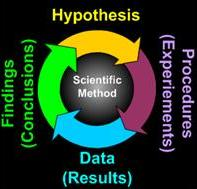

The Future
- Futures Portal
- One Future Vision
- Post Human Futures
- Distant Future
- Other Visions
- Future Homo Sapiens
- Future Quotes
Future Studies
The Scientific Method
|
In pursuit of a more deliberate and positive future, a number of methods, procedures, and disciplines are needed to study, formulate, and enact positive change. One of the most important of these is the scientific method. While this method is the best (and only reliable) method to use for proving the laws that govern physical reality and for confirming our assumptions about the universe around us, it is not without its limitations. Generally, these limitations are in the form of our ability to accurately measure what we suspect may exist (5+ dimensions and the basic constituents of matter to name but two) for lack of instrument sophistication. |
 |
As a result of these limitations, there are many fundamental questions that science can not yet answer. We have little doubt that as our collective knowledge increases, as artificial intelligences gain thousands of times our current human processing power, and as instrumentation develops on the molecular level (nanotechnology), many if not all, of the secrets of the universe may be revealed.
Until that time, we are all well advised to keep an open mind with regard to the nature of the universe and its creation. But there is no need to prevent the unfolding of our future.
Quicklinks on this Page
Introduction to the Scientific Method
The scientific method is the process by which scientists, collectively
and over time, endeavor to construct an accurate (that is, reliable, consistent
and non-arbitrary) representation of the world.
Recognizing that personal and cultural beliefs influence both our
perceptions and our interpretations of natural phenomena, we aim through the
use of standard procedures and criteria to minimize those influences when
developing a theory. As a famous scientist once said, "Smart people (like smart
lawyers) can come up with very good explanations for mistaken points of view."
In summary, the scientific method attempts to minimize the influence of bias or
prejudice in the experimenter when testing an hypothesis or a theory.
I. The scientific method has four steps
1. Observation and description of a phenomenon or group of phenomena.
2. Formulation of an hypothesis to explain the phenomena. In physics, the
hypothesis often takes the form of a causal mechanism or a mathematical
relation.
3. Use of the hypothesis to predict the existence of other phenomena, or to
predict quantitatively the results of new observations.
4. Performance of experimental tests of the predictions by several independent
experimenters and properly performed experiments.
If the experiments bear out the hypothesis it may come to be regarded as a
theory or law of nature (more on the concepts of hypothesis, model, theory and
law below). If the experiments do not bear out the hypothesis, it must be
rejected or modified. What is key in the description of the scientific method
just given is the predictive power (the ability to get more out of the theory
than you put in; see Barrow, 1991) of the hypothesis or theory, as tested by
experiment. It is often said in science that theories can never be proved, only
disproved. There is always the possibility that a new observation or a new
experiment will conflict with a long-standing theory.
II. Testing hypotheses
As just stated, experimental tests may lead either to the confirmation
of the hypothesis, or to the ruling out of the hypothesis. The scientific
method requires that an hypothesis be ruled out or modified if its predictions
are clearly and repeatedly incompatible with experimental tests. Further, no
matter how elegant a theory is, its predictions must agree with experimental
results if we are to believe that it is a valid description of nature. In
physics, as in every experimental science, "experiment is supreme" and
experimental verification of hypothetical predictions is absolutely necessary.
Experiments may test the theory directly (for example, the observation of a new
particle) or may test for consequences derived from the theory using
mathematics and logic (the rate of a radioactive decay process requiring the
existence of the new particle). Note that the necessity of experiment also
implies that a theory must be testable. Theories which cannot be tested,
because, for instance, they have no observable ramifications (such as, a
particle whose characteristics make it unobservable), do not qualify as
scientific theories.
If the predictions of a long-standing theory are found to be in disagreement
with new experimental results, the theory may be discarded as a description of
reality, but it may continue to be applicable within a limited range of
measurable parameters. For example, the laws of classical mechanics (Newton's
Laws) are valid only when the velocities of interest are much smaller than the
speed of light (that is, in algebraic form, when v/c << 1). Since this is
the domain of a large portion of human experience, the laws of classical
mechanics are widely, usefully and correctly applied in a large range of
technological and scientific problems. Yet in nature we observe a domain in
which v/c is not small. The motions of objects in this domain, as well as
motion in the "classical" domain, are accurately described through the
equations of Einstein's theory of relativity. We believe, due to experimental
tests, that relativistic theory provides a more general, and therefore more
accurate, description of the principles governing our universe, than the
earlier "classical" theory. Further, we find that the relativistic equations
reduce to the classical equations in the limit v/c << 1. Similarly,
classical physics is valid only at distances much larger than atomic scales (x
>> 10-8 m). A description which is valid at all length scales
is given by the equations of quantum mechanics.
We are all familiar with theories which had to be discarded in the face of
experimental evidence. In the field of astronomy, the earth-centered
description of the planetary orbits was overthrown by the Copernican system, in
which the sun was placed at the center of a series of concentric, circular
planetary orbits. Later, this theory was modified, as measurements of the
planets motions were found to be compatible with elliptical, not circular,
orbits, and still later planetary motion was found to be derivable from
Newton's laws.
Error in experiments have several sources. First, there is error intrinsic to
instruments of measurement. Because this type of error has equal probability of
producing a measurement higher or lower numerically than the "true" value, it
is called random error. Second, there is non-random or systematic error, due to
factors which bias the result in one direction. No measurement, and therefore
no experiment, can be perfectly precise. At the same time, in science we have
standard ways of estimating and in some cases reducing errors. Thus it is
important to determine the accuracy of a particular measurement and, when
stating quantitative results, to quote the measurement error. A measurement
without a quoted error is meaningless. The comparison between experiment and
theory is made within the context of experimental errors. Scientists ask, how
many standard deviations are the results from the theoretical prediction? Have
all sources of systematic and random errors been properly estimated?
III. Common Mistakes in Applying the Scientific Method
As stated earlier, the scientific method attempts to minimize the
influence of the scientist's bias on the outcome of an experiment. That is,
when testing an hypothesis or a theory, the scientist may have a preference for
one outcome or another, and it is important that this preference not bias the
results or their interpretation. The most fundamental error is to mistake the
hypothesis for an explanation of a phenomenon, without performing experimental
tests. Sometimes "common sense" and "logic" tempt us into believing that no
test is needed. There are numerous examples of this, dating from the Greek
philosophers to the present day.
Another common mistake is to ignore or rule out data which do not support the
hypothesis. Ideally, the experimenter is open to the possibility that the
hypothesis is correct or incorrect. Sometimes, however, a scientist may have a
strong belief that the hypothesis is true (or false), or feels internal or
external pressure to get a specific result. In that case, there may be a
psychological tendency to find "something wrong", such as systematic effects,
with data which do not support the scientist's expectations, while data which
do agree with those expectations may not be checked as carefully. The lesson is
that all data must be handled in the same way.
Another common mistake arises from the failure to estimate
quantitatively systematic errors (and all errors). There are many
examples of discoveries which were missed by experimenters whose data contained
a new phenomenon, but who explained it away as a systematic background.
Conversely, there are many examples of alleged "new discoveries" which later
proved to be due to systematic errors not accounted for by the "discoverers."
In a field where there is active experimentation and open communication
among members of the scientific community, the biases of individuals or groups
may cancel out, because experimental tests are repeated by different scientists
who may have different biases. In addition, different types of experimental
setups have different sources of systematic errors. Over a period spanning a
variety of experimental tests (usually at least several years), a consensus
develops in the community as to which experimental results have stood the test
of time.
IV. Hypotheses, Models, Theories and Laws
In physics and other science disciplines, the words "hypothesis,"
"model," "theory" and "law" have different connotations in relation to the
stage of acceptance or knowledge about a group of phenomena.
An hypothesis is a limited statement regarding cause and effect in
specific situations; it also refers to our state of knowledge before
experimental work has been performed and perhaps even before new phenomena have
been predicted. To take an example from daily life, suppose you discover that
your car will not start. You may say, "My car does not start because the
battery is low." This is your first hypothesis. You may then check whether the
lights were left on, or if the engine makes a particular sound when you turn
the ignition key. You might actually check the voltage across the terminals of
the battery. If you discover that the battery is not low, you might attempt
another hypothesis ("The starter is broken"; "This is really not my car.")
The word model is reserved for situations when it is known that the
hypothesis has at least limited validity. A often-cited example of this is the
Bohr model of the atom, in which, in an analogy to the solar system, the
electrons are described has moving in circular orbits around the nucleus. This
is not an accurate depiction of what an atom "looks like," but the model
succeeds in mathematically representing the energies (but not the correct
angular momenta) of the quantum states of the electron in the simplest case,
the hydrogen atom. Another example is Hook's Law (which should be called Hook's
principle, or Hook's model), which states that the force exerted by a mass
attached to a spring is proportional to the amount the spring is stretched. We
know that this principle is only valid for small amounts of stretching. The
"law" fails when the spring is stretched beyond its elastic limit (it can
break). This principle, however, leads to the prediction of simple harmonic
motion, and, as a model of the behavior of a spring, has been versatile
in an extremely broad range of applications.
A scientific theory or law represents an hypothesis, or a group of
related hypotheses, which has been confirmed through repeated experimental
tests. Theories in physics are often formulated in terms of a few concepts and
equations, which are identified with "laws of nature," suggesting their
universal applicability. Accepted scientific theories and laws become part of
our understanding of the universe and the basis for exploring less
well-understood areas of knowledge. Theories are not easily discarded; new
discoveries are first assumed to fit into the existing theoretical framework.
It is only when, after repeated experimental tests, the new phenomenon cannot
be accommodated that scientists seriously question the theory and attempt to
modify it. The validity that we attach to scientific theories as representing
realities of the physical world is to be contrasted with the facile
invalidation implied by the expression, "It's only a theory." For example, it
is unlikely that a person will step off a tall building on the assumption that
they will not fall, because "Gravity is only a theory."
Changes in scientific thought and theories occur, of course, sometimes
revolutionizing our view of the world (Kuhn, 1962). Again, the key force for
change is the scientific method, and its emphasis on experiment.
V. Are there circumstances in which the Scientific Method is not applicable?
While the scientific method is necessary in developing scientific
knowledge, it is also useful in everyday problem-solving. What do you do when
your telephone doesn't work? Is the problem in the hand set, the cabling inside
your house, the hookup outside, or in the workings of the phone company? The
process you might go through to solve this problem could involve scientific
thinking, and the results might contradict your initial expectations.
Like any good scientist, you may question the range of situations (outside of
science) in which the scientific method may be applied. From what has been
stated above, we determine that the scientific method works best in situations
where one can isolate the phenomenon of interest, by eliminating or accounting
for extraneous factors, and where one can repeatedly test the system under
study after making limited, controlled changes in it.
There are, of course, circumstances when one cannot isolate the phenomena or
when one cannot repeat the measurement over and over again. In such cases the
results may depend in part on the history of a situation. This often occurs in
social interactions between people. For example, when a lawyer makes arguments
in front of a jury in court, she or he cannot try other approaches by repeating
the trial over and over again in front of the same jury. In a new trial, the
jury composition will be different. Even the same jury hearing a new set of
arguments cannot be expected to forget what they heard before.
VI. Conclusion
The scientific method is intricately associated with science, the process of human inquiry that pervades the modern era on many levels. While the method appears simple and logical in description, there is perhaps no more complex question than that of knowing how we come to know things. In this introduction, we have emphasized that the scientific method distinguishes science from other forms of explanation because of its requirement of systematic experimentation. We have also tried to point out some of the criteria and practices developed by scientists to reduce the influence of individual or social bias on scientific findings. Further investigations of the scientific method and other aspects of scientific practice may be found in the references listed below.
VII. References
1. Wilson, E. Bright. An Introduction to Scientific Research
(McGraw-Hill, 1952).
2. Kuhn, Thomas. The Structure of Scientific Revolutions (Univ. of Chicago Press, 1962).
3. Barrow, John. Theories of Everything (Oxford Univ. Press, 1991).
^ Top ^